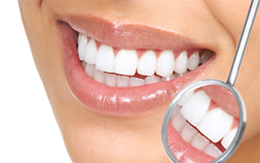

Naše služby
Vstupné vyšetrenie
Základom každého vstupného vyšetrenia je preventivna prehliadka, panoramatický snímok a konzultácia s pacientom.
Dentálna hygiena

Zdravý chrup a ďasná bez zápalov dosiahneme pravidelnou návštevou dentálnej hygieny, pri ktorej sa odstráni zubný kameň ultrazvukom a povlaky-metódou air-flow. U problematickejších pacientov kyretáž parodontálnych vačkov ručnými kyretami. Po ukončení dentálnej hygieny je každý pacient poučený o domácej starostlivosti a intervale nasledujúcej návštevy.
Konzervačná stomatológia

Sanácia chrupu, ošetrenie zubov od zubných kazov, úľava od citlivosti, oprava starých výplní, úprava previslých a nevyhovujúcich výplní. Podľa rozsahu vyprepreparovanej kavity sa zvolí vhodný materiál na dostavbu zubného tkaniva (kompozit, skloionomer, farebné plomby u detí).
Detská stomatológia

Poskytujeme individuálny prístup ku každému malému pacientovi, aby prvý kontakt so zubným lekárom a prostredím nebol pre deti nepríjemným zážitkom.
Endodoncia

Pri neutíchajúcej bolesti zubov, je väčšinou baktériami infikovaný zubný nerv, vyživujúci zubné tkanivo. Po jeho odstránení z koreňového kanálika nastáva okamžitá úľava od bolesti. Táto metóda sa odborne nazýva endodontické ošetrenie koreňového kanálika. Nerv sa vyberá rotačnými nástrojmi a prázdny koreňový kanálik sa plní koreňovou výplňou.
Chirurgia

Väčšinou plánované zákroky v lokálnej anestéze po predchádzajúcej konzultácii s chirurgom. Chirurgická extrakcia osmičiek, frenulektómia, resekcia, prehĺbenie vestibula, náhrada chýbajúcich zubov implantátmi.
Protetika
Pomocou fixnej alebo snímateľnej náhrady dokážeme nahradiť chýbajúce zuby. V závislosti od materiálu a typu náhrady sa vieme pohybovať od najjednoduchšej snímateľnej náhrady až po estetické korunky z rôznych materiálov (korunka kovokeramická, celokeramická, zirkonová).